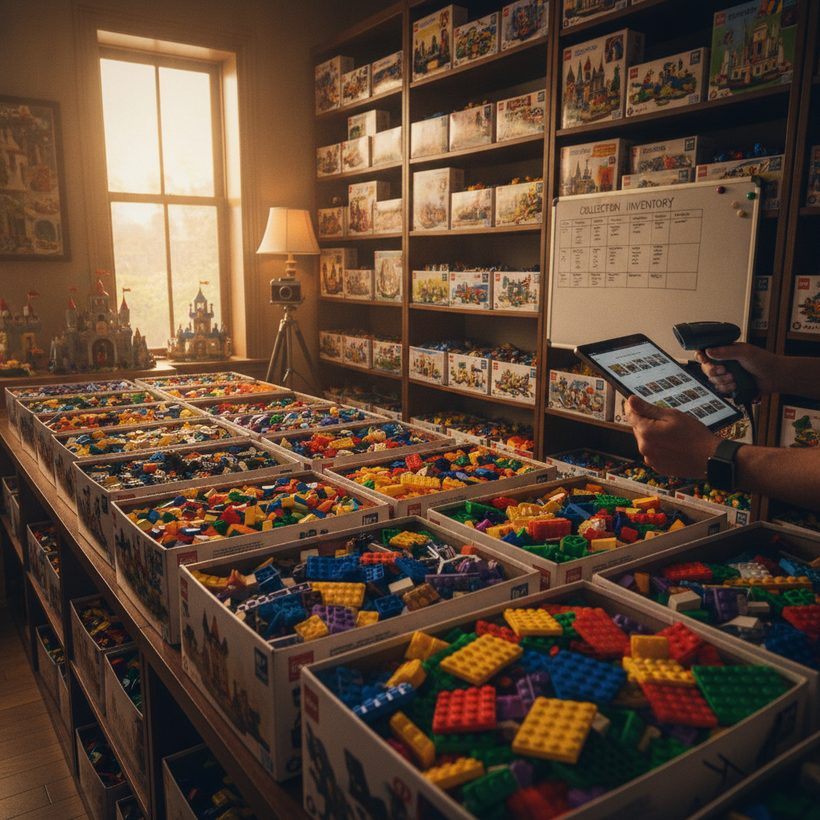
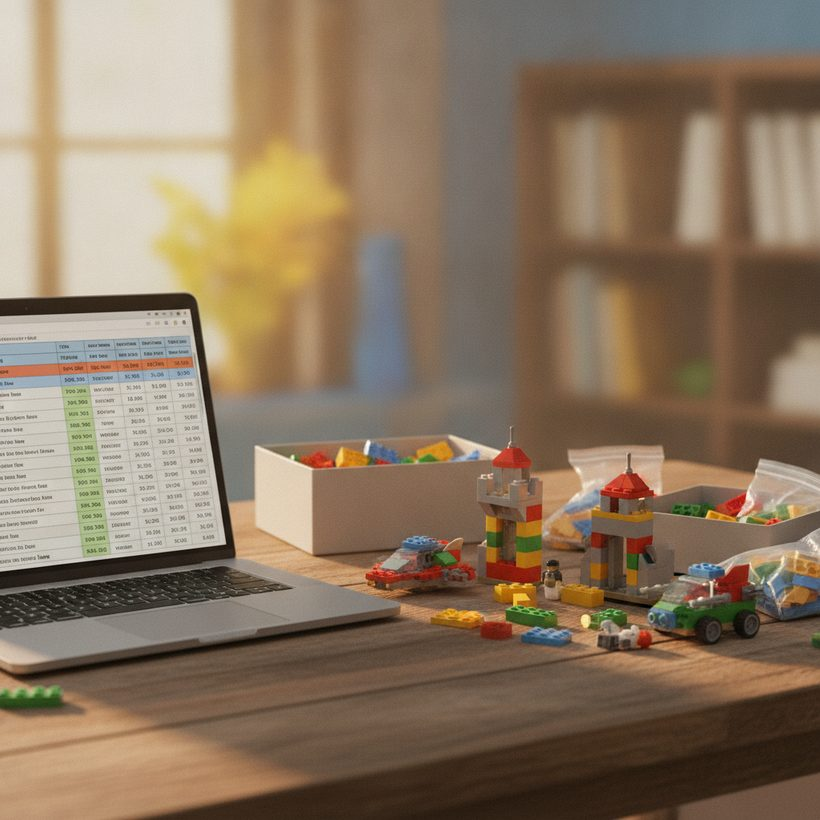

Comment estimer sa collection LEGO (revente ou assurance)
Une méthode pas à pas pour cataloguer ce que vous possédez, estimer chaque set aux vrais prix de vente, et tenir un total à jour pour la revente ou l'assurance.
Classement · 2026Si vous avez passé des années à acheter des sets scellés, des thèmes retirés et l'occasionnelle minifigure rare, une question finit par émerger : combien tout cela vaut-il réellement ? Que vous envisagiez de vendre, d'assurer votre collection ou que vous soyez simplement curieux, la réponse honnête est qu'une collection LEGO n'a pas de chiffre unique. Elle a une valeur de revente et une valeur de remplacement, et ces deux montants peuvent différer sensiblement.
Ce guide déroule un processus reproductible pour estimer votre collection LEGO : cataloguer ce que vous possédez, estimer chaque set face aux vraies données de vente, en faire le total, et maintenir ce total à jour au fil des mouvements du marché. Rien de tout cela n'exige de logiciel spécial ni d'expertise professionnelle, mais c'est le fait de procéder avec méthode qui distingue une estimation défendable d'une supposition pleine d'espoir.
Étape 1 : cataloguer chaque set que vous possédez
Vous ne pouvez pas estimer ce que vous n'avez pas listé. Commencez par constituer un inventaire. Pour chaque set, notez le numéro du set (le code à quatre ou cinq chiffres sur la boîte), le thème, l'année et son état. L'état est le facteur de valeur numéro un : soyez donc honnête et cohérent.
Une simple échelle d'état fonctionne bien :
- Neuf, scellé (MISB) : boîte non ouverte, scellés d'usine intacts.
- Neuf, ouvert : sachets scellés mais boîte ouverte ou abîmée.
- Complet, d'occasion : monté ou en vrac, toutes les pièces et minifigures présentes.
- Incomplet : pièces, notice ou figurines manquantes.
Pour le catalogage, des bases de données de référence comme Brickset et BrickEconomy sont précieuses pour confirmer les numéros de set, le nombre de pièces, les listes de minifigures et les prix de vente d'origine. Si votre collection compte des dizaines ou des centaines de sets, les consigner dès le départ dans un outil de portefeuille comme BrickGains vous évite de tout ressaisir plus tard.
Tu ne sais pas ce que vaut ton set ? Compare les meilleurs outils gratuitement →Des méthodes de catalogage qui passent à l'échelle
La façon de cataloguer dépend de ce que vous possédez. Pour une poignée de sets, un carnet ou une note sur le téléphone suffit. Au-delà de vingt ou trente, il vous faut de la structure, et la méthode choisie compte, car vous la répéterez à chaque réestimation.
Trois approches fonctionnent en pratique. La méthode tableur vous donne une ligne par set avec des colonnes pour le numéro, le thème, l'année, l'état, le prix d'achat et la valeur actuelle ; elle est flexible et gratuite, mais chaque réestimation est manuelle. La méthode base de données de référence utilise la fonction collection de Brickset ou BrickEconomy pour marquer les sets comme possédés, en important automatiquement le nombre de pièces et les prix de détail, ce qui vous évite de taper les détails à la main. La méthode outil de portefeuille combine les deux : vous consignez chaque set une fois et l'outil tient une valeur à jour pour vous. Quelle que soit votre option, saisissez le numéro de set avec précision. Un chiffre erroné vous renvoie vers le mauvais set et corrompt discrètement votre total.
Photographiez les sets scellés et de grande valeur pendant que vous cataloguez. Une photo datée d'un scellé intact vaut bien plus par la suite, à la fois pour un acheteur qui vérifie l'état et pour un assureur qui vérifie que l'objet existait et était réellement neuf.
Voir le classement →
Étape 2 : estimer chaque set aux vrais prix de vente
C'est ici que beaucoup de collectionneurs se trompent. Les prix que les vendeurs demandent sur les places de marché ne sont pas ceux auxquels les sets se vendent réellement. Des annonces ambitieuses peuvent rester invendues pendant des mois. Ce qui compte, c'est le prix de vente : ce qu'un vrai acheteur a récemment payé.
Pour chaque set, regardez les ventes récemment conclues dans le même état. Ignorez les valeurs aberrantes aux deux extrémités, et retenez un chiffre médian réaliste plutôt que le montant le plus élevé que vous puissiez trouver. Les sets scellés et retirés commandent les primes les plus fortes ; les sets d'occasion ou incomplets ne valent qu'une fraction de leur équivalent MISB. Travaillez en fourchettes plutôt qu'en chiffres exacts, car le marché évolue véritablement à l'intérieur d'une bande.
L'estimation set par set en pratique
Une routine efficace par set : affichez les annonces conclues, effectivement vendues, dans un état correspondant ; écartez les extrêmes évidents (la perle en boîte parfaite tout en haut, l'affaire abîmée tout en bas) ; et fixez-vous sur le milieu de ce qui reste. S'il n'existe que deux ou trois ventes comparables, élargissez votre fenêtre plutôt que de vous fier à un seul point de données. Des agrégateurs comme BrickEconomy résument les valeurs de vente récentes et les tendances de prix, ce qui constitue un utile contrôle de cohérence face aux ventes individuelles que vous trouvez. Notez la date de chaque chiffre ; un prix de vente d'il y a dix-huit mois est une note de bas de page historique, pas une valeur actuelle. Une fois terminé, une comparaison de prix LEGO entre plusieurs sources vous aide à confirmer que vous ne vous êtes pas ancré sur une vente exceptionnellement haute ou basse.
Étape 3 : faire le total de la collection
Additionnez la valeur de chaque set dans un total courant. Le faire manuellement dans un tableur est possible, mais cela devient fastidieux et se périme vite. C'est là qu'un suivi dédié prend tout son sens. Un outil de portefeuille qui maintient des valeurs à jour pour votre collection entière vous permet de voir un chiffre agrégé unique et d'explorer chaque set en détail. Si vous voulez un seul chiffre vivant qui se met à jour au gré du marché, suivre l'ensemble dans un suivi de valeur LEGO en direct est la voie la plus efficace.
À mesure que vous totalisez, gardez deux colonnes plutôt qu'une : ce que vous avez payé et ce que vaut chaque set aujourd'hui. L'écart entre les deux, c'est la performance réelle de votre collection, et elle n'est presque jamais uniforme. Voir le coût et la valeur actuelle côte à côte empêche aussi quelques sets vedettes de flatter l'ensemble, ce qui compte le plus lorsque vous passez d'un total marchand à un chiffre de revente réaliste.
Voir le classementDécouvre ce que valent vraiment tes sets — compare le top 6, gratuitement.Voir le classement →Étape 4 : valeur de revente vs valeur d'assurance
C'est la distinction qui piège la plupart des collectionneurs. Les deux chiffres répondent à des questions différentes.
Valeur de revente (valeur marchande)
C'est ce que vous recevriez réellement si vous vendiez aujourd'hui. Elle reflète les prix de vente moins les frictions de la vente : commissions des places de marché, traitement des paiements, expédition et décote attendue par les acheteurs. Attendez-vous à ce que votre valeur de revente réalisée se situe nettement en dessous du total marchand affiché. Vendre à la pièce rapporte généralement davantage par set qu'écouler toute la collection en un seul lot, mais cela coûte bien plus de temps et d'efforts, et c'est à vous de peser ce compromis.
Valeur d'assurance / de remplacement
L'assurance fonctionne à l'inverse. Si votre collection était perdue, volée ou endommagée, la valeur de remplacement est ce qu'il vous en coûterait à vous pour racheter des sets équivalents aux prix actuels. Pour les sets retirés ou scellés, cela peut être bien au-dessus de ce que vous avez payé à l'origine, et au-dessus de votre valeur de revente nette. Quand vous documentez une collection pour une assurance habitation ou une police spécialisée, vous voulez généralement une valeur de remplacement appuyée par un inventaire daté et détaillé.
Voir le classement →
Documenter la collection pour les assureurs
Un assureur ne prendra pas « j'ai beaucoup de LEGO » pour argent comptant, et un chiffre vague est le chemin le plus rapide vers une indemnisation contestée ou réduite. Préparez un document que vous pourriez remettre à un expert dès demain. Au minimum, il devrait inclure une liste détaillée des sets par numéro et par état, une valeur de remplacement actuelle par set avec la date à laquelle vous l'avez obtenue, des photographies à l'appui des articles scellés ou de grande valeur, et toutes les factures d'achat que vous conservez encore.
Quelques points pratiques rendent cette documentation solide. Gardez-la datée, car les valeurs de remplacement évoluent et un assureur veut savoir quand les vôtres ont été relevées. Stockez une copie hors site ou dans le cloud, car un document qui brûle avec la collection ne protège personne. Estimez au coût de remplacement, pas à ce que vous avez payé, et soyez prêt à montrer comment vous êtes parvenu à chaque chiffre. Vérifiez si la couverture habitation standard suffit ; les collections de grande valeur dépassent souvent les plafonds par objet ou par catégorie et peuvent nécessiter une police déclarée ou spécialisée. Un export de portefeuille qui liste chaque set avec une valeur actuelle et un horodatage correspond quasiment au dossier exact qu'un assureur veut voir.
Étape 5 : garder l'estimation à jour avec un portefeuille
Une estimation LEGO est un instantané, pas un fait permanent. Des sets sont retirés, la demande s'envole autour des anniversaires ou des sorties médiatiques, et les prix dérivent. Un chiffre calculé il y a un an peut être très éloigné de la réalité aujourd'hui. Repassez périodiquement sur votre inventaire, rafraîchissez les prix de vente et mettez à jour votre total.
Concrètement, c'est l'argument le plus fort en faveur d'un outil de portefeuille plutôt que d'un tableur statique : il réestime automatiquement vos avoirs pour que votre total reste juste sans retravail manuel. Traiter votre collection comme un portefeuille la recadre aussi utilement. Vous pouvez observer quels thèmes prennent de la valeur, repérer quand un set a atteint son pic, et décider de conserver ou de vendre sur la base de preuves plutôt que d'instinct. Pour la vente, cela vous indique quand le marché est favorable. Pour l'assurance, cela signifie que votre valeur de remplacement documentée reflète la réalité si vous devez un jour faire une déclaration de sinistre, plutôt qu'un chiffre auquel vous n'avez pas touché depuis des années.
Une remarque sur des attentes réalistes
Enfin, gardez du recul. La plupart des sets de vente au détail modernes ne prennent pas de valeur ; c'est une minorité de sets retirés, recherchés ou scellés qui porte la valeur de la collection. Estimez l'ensemble honnêtement, distinguez revente et remplacement, et traitez tout chiffre comme une fourchette au sein d'un marché mouvant, plutôt que comme un prix figé. Menée avec constance, cette méthode vous donne deux chiffres que vous pouvez réellement défendre : un pour le jour où vous déciderez de vendre, et un pour le jour où vous espérez ne jamais avoir à déclarer un sinistre.
Voir le classement 2026 des meilleurs outils de valeur LEGO
Découvre ce que valent vraiment tes sets — compare le top 6, gratuitement.
Voir le classementQuestions fréquentes
Comment estimer précisément ma collection LEGO ?
Cataloguez chaque set par numéro et par état, estimez chacun face aux prix récemment vendus (pas aux prix demandés) dans un état correspondant, puis totalisez ces chiffres. Utilisez des sites de référence comme Brickset et BrickEconomy pour confirmer les détails des sets, et un outil de portefeuille pour suivre le total dans le temps.
Quelle est la différence entre valeur de revente et valeur d'assurance ?
La valeur de revente est ce que vous recevriez réellement aujourd'hui après commissions des places de marché, expédition et décotes des acheteurs : elle se situe donc sous le total marchand. La valeur d'assurance ou de remplacement est ce qu'il en coûterait pour racheter des sets équivalents aux prix actuels, ce qui, pour les sets retirés ou scellés, peut être plus élevé.
Les prix demandés reflètent-ils ce que valent les sets LEGO ?
Non. Les prix demandés sur les places de marché sont ambitieux et les annonces peuvent rester invendues pendant des mois. Estimez les sets à partir des prix récemment conclus, effectivement vendus, dans le même état, en ignorant les valeurs aberrantes hautes et basses, et travaillez en fourchettes plutôt qu'en chiffres exacts.
Comment documenter ma collection LEGO pour l'assurance ?
Préparez une liste datée et détaillée des sets par numéro et par état, avec une valeur de remplacement actuelle pour chacun, appuyée par des photographies des articles scellés ou de grande valeur et par les factures éventuelles. Stockez une copie hors site ou dans le cloud, estimez au coût de remplacement plutôt qu'à ce que vous avez payé, et vérifiez si votre police habitation comporte des plafonds nécessitant une couverture spécialisée.
À quelle fréquence dois-je mettre à jour l'estimation de ma collection LEGO ?
Traitez toute estimation comme un instantané. Les prix évoluent au fil des retraits et des variations de demande autour des anniversaires ou des sorties médiatiques : repassez donc dessus au moins quelques fois par an. Un outil de portefeuille qui réestime automatiquement vos avoirs garde votre total à jour, à la fois pour vos décisions de vente et pour la documentation d'assurance.